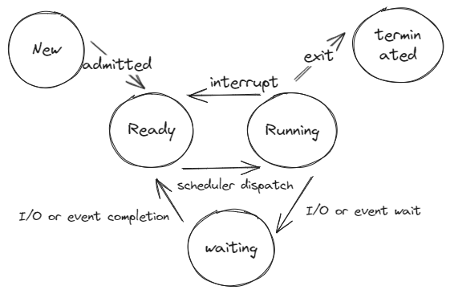

Applications Lifecycle
Software engineer @ Dayforce
Ye Lin Aung
2024-05-31 Fri 00:00
Lifecycles & States
Basics

Importance
Life cycles helps you to understand whats happening.
Helps to understand state management.
Crucial in debugging.
Need to consider what to do if the programmed is killed when coding.
Software development lifecycle

Request/Response (General)
Load balancer

Web Server

Application
Process

Lets analyze
Mobile apps
TCP
Mobile application
TCP